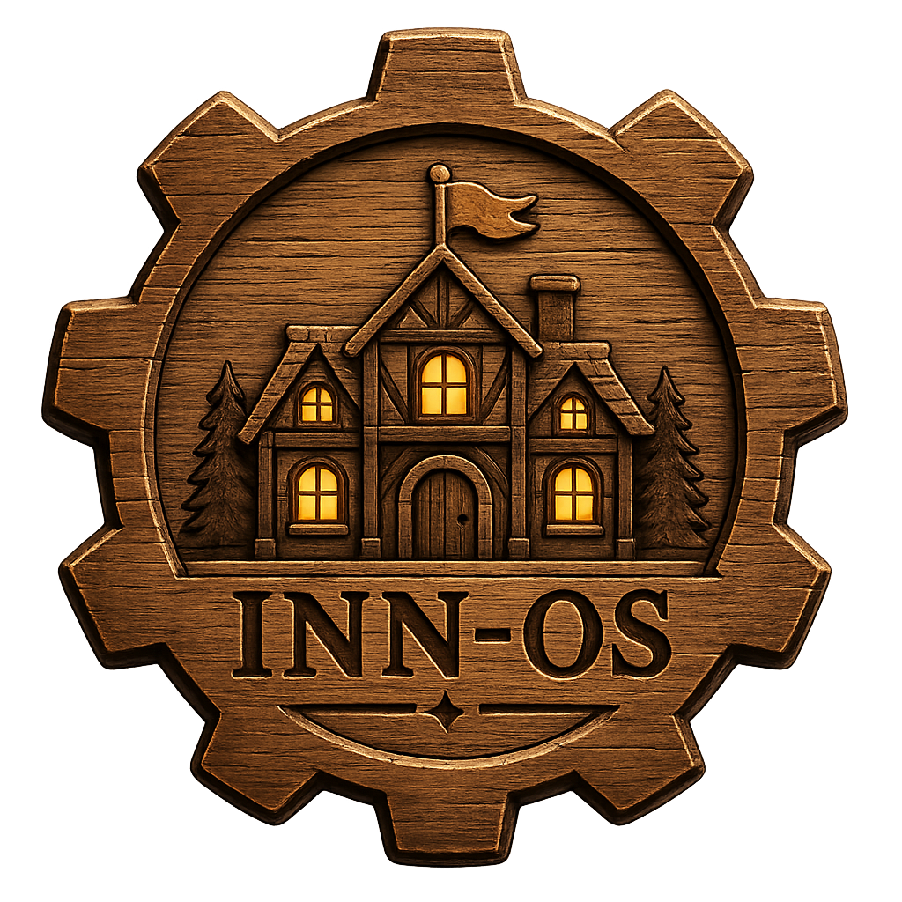

INN-OS
Discord既存機能の強化BOT
募集、プロフィール、通知、VC管理など、Discord既存機能を整理・拡張し、
小規模から大規模まで使いやすいコミュニティ作りを支援します。
主な機能
📖 Registry
プロフィールや自己紹介を登録し、メンバーが何をしている人なのか分かりやすくします。
🔔 Notify
ゲームや話題ごとの通知設定を整理し、必要な人へ募集を届けやすくします。
📢 Recruitment
ゲーム、雑談、作業などの募集を作成し、コミュニティ内で人を集めやすくします。
🎤 Voice Channel Management
VCの乱立を防ぎ、必要な時だけ使いやすい通話環境を作ります。
INN-OSについて
INN-OSはDiscordを置き換えるBOTではありません。 Discordに元からある機能をより扱いやすくするための、コミュニティ向け基盤BOTです。